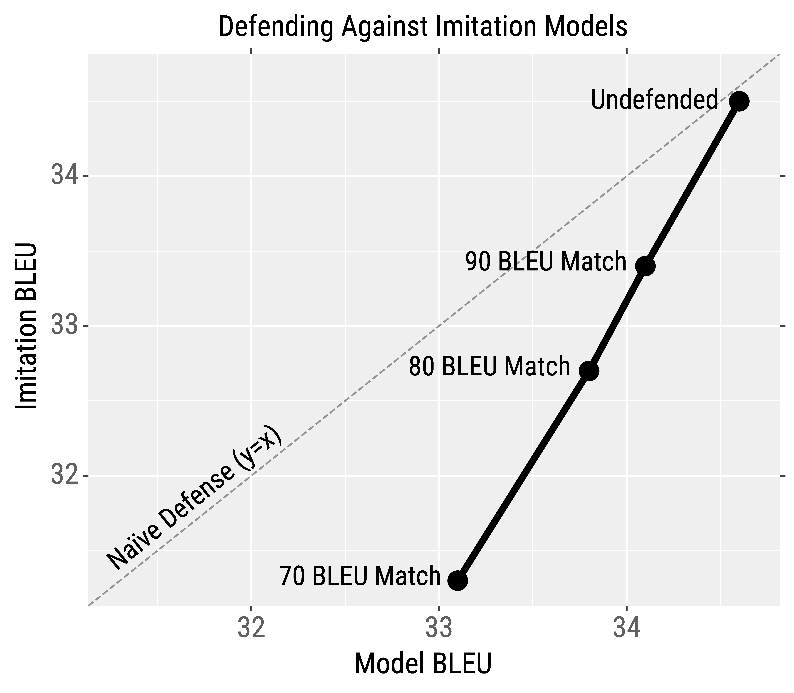

Controlling Test Predictions With Concealed Data Poisoning
- TODO
Background
Many production machine learning systems are served via APIs. For example, Google Translate is an API that takes in a source sentence and returns the translation from a neural machine translation (MT) system. Machine learning APIs are lucrative assets for organizations and are typically the result of considerable investments in data annotation and model training. Consequently, APIs are kept as black-boxes to protect intellectual property and system integrity.
Imitating Black-box MT Systems
Training models to imitate black-box MT systems is quite similar to knowledge distillation: training a student model to imitate the predictions of a teacher. Some important differences are that the victim’s (i.e., teacher’s) training data is unknown. This causes the queries to typically be out-of-domain for the victim. Moreover, the victim's probabilities are hidden on most real-world APIs, which prevents using distribution matching losses like KL Divergence.
We first analyze the effectiveness of imitation models with simulated experiments. We train a local victim model, query it, and then train imitation models to mimic its outputs. We train imitation models that are different from the victim in various aspects: input dataset, model architecture, and hyperparameters.
Imitation models can closely match the performance of their victims in all circumstances. For example, even when the victim model is trained on TED talks and queried with sentences from the European Parliament, imitation models can imitate the victim with enough data. The green curve in the figure below shows the learning curve of training on normal MT data; the purple curve shows training on the out-of-domain Europarl data that is labeled by the victim.

Given the efficacy of our simulated results, we now turn to imitating production MT systems from Google, Bing, and Systran. We use English→German (high-resource) and Nepali→English (low-resource) language pairs. Our imitation models closely imitate the production systems: we are always within 0.6 BLEU of the (extremely accurate, SoTA) production models.
Attacking Black-box MT Systems
We next show that imitation models can be used to create adversarial examples for black-box MT systems. Adversarial attacks can systematically expose errors that cause public and corporate harm. For example, Google was criticized when it mistranslated "sad" as "happy" when translating "I am sad to see Hong Kong become part of China".
We use gradient-based adversarial attacks following past work on attacking NLP. We create the adversarial examples for our imitation models and then transfer them to the production systems, i.e., we hope that the similarity of the imitation and the production models enables attack transfer. We create four different types of attacks:
Targeted Flips: We cause a specific output token to flip in a desired way. For example, we cause Systran to predict "froh" (happy) instead of "greu" (gray) in the sentence "I am feeling grey that HK decided to join China":

Malicious Nonsense: We find nonsense inputs that translate to malicious/vulgar outputs. For example, “miei llll going ro tobobombier the Land” is translated as "I will bomb the country" (in German) by Google.

Universal Triggers: We create universal adversarial triggers for MT. The first type of trigger is a untargeted universal trigger, which is a phrase that commonly causes incorrect translations when it is appended to any input. For example, appending the word "Siehe" seven times to inputs causes Systran to frequently output incorrect translations:

The second type of trigger is the universal suffix dropper. These are phrases that, when appended to any input, commonly cause the trigger phrase and any subsequent text to be dropped from the translation.

In our paper, we describe the algorithm for creating these attacks and also provide quantitative metrics for the attack's success rate and transferability.
Defending Against Imitation Models
How can we defend against model stealing? We design a defense against NLP model stealing that slightly degrades victim model BLEU while more significantly degrading imitation model BLEU. To accomplish this, we adapt prediction poisoning to MT: rather than outputting the original translation, we output a different (high-accuracy) translation that steers the optimization of the imitation model in the wrong direction.
We first generate the original model translation. We then generate 100 alternate translations using various strategies (beam search, top-k sampling, etc.) and remove the candidates that don't heavily overlap with the original translation. Finally, we pick the candidate whose gradient direction maximally deviates from the gradient when using the original model output. In essence, training on this candidate induces an incorrect gradient signal for the imitation model.
For example, the table below shows a source + target sentence and a transformer model's original translation. We also show three alternate translations and their associated gradient deviation (∠) and BLEU overlap (Match) with the original translation. Depending on how much we want to trade-off accuracy, we can output one of the three alternate translation candidates.
This defense is able to trade-off the victim model's BLEU (e.g., 34.6→33.üòé in order to more significantly degrade the imitation model's BLEU (e.g., 34.5→32.7). Even though the drop in imitation model BLEU is not catastrophic, the victim has a clear competitive advantage over the adversary. Moreover, in our paper we show that adversarial examples transfer less often when using our defense.

Overall, our defense is a first step towards defending against NLP model stealing. The current defense is computationally expensive and noticeably lowers accuracy---it is up to the production systems to decide whether this cost is worth the added protection. Stronger üí™ defenses are needed to fully protect our NLP systems.
Summary:
We demonstrate that model stealing and adversarial examples are practical concerns for production MT systems. Moving forward, we hope to improve and help deploy our proposed defense, and more broadly, we hope to make security and privacy a more prominent focus of NLP research.
Contact Eric Wallace on Twitter or by Email.